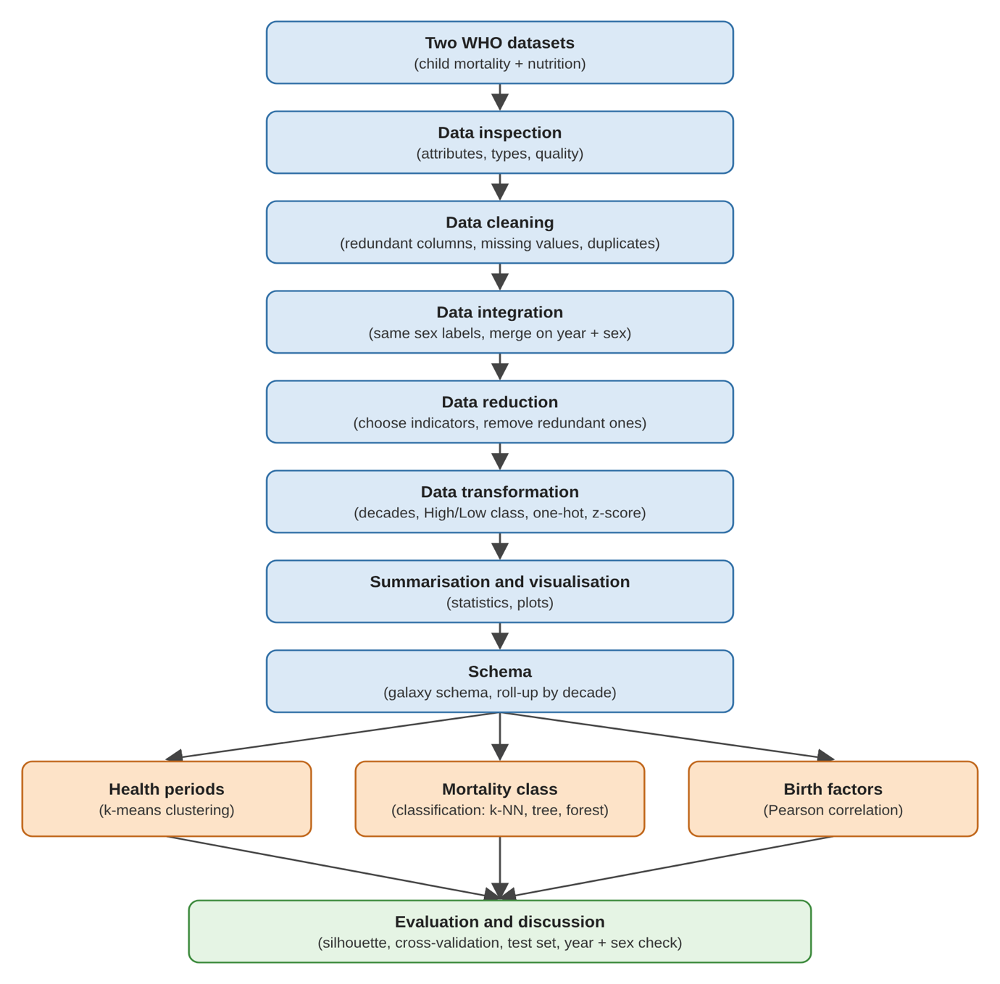
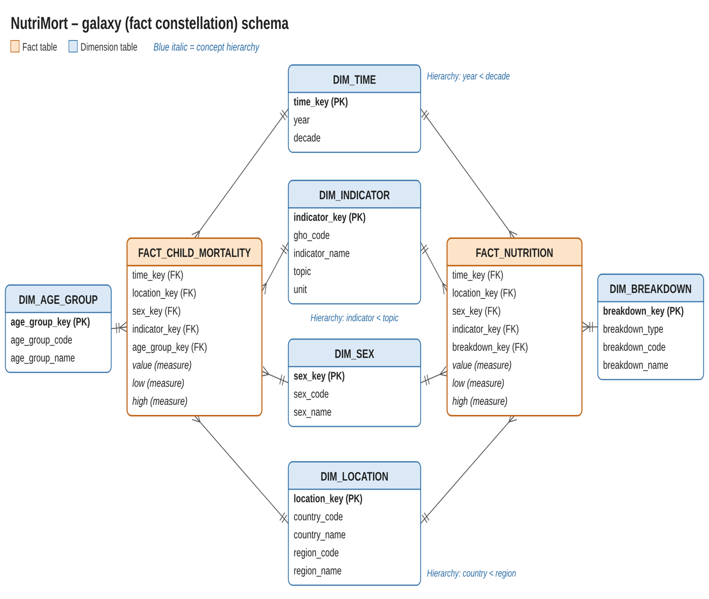
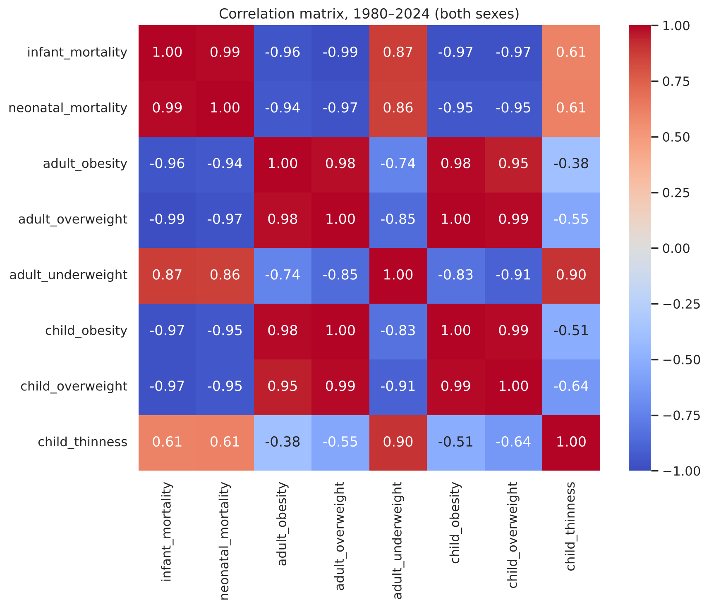
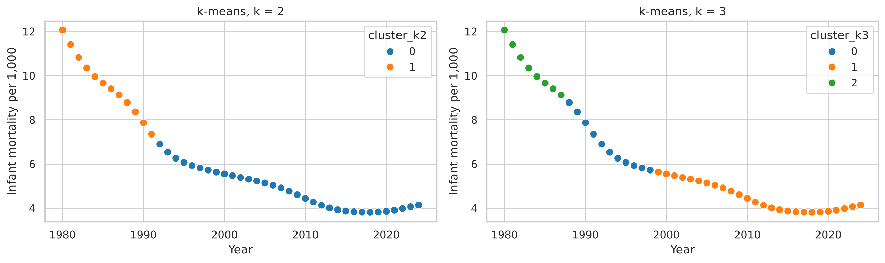
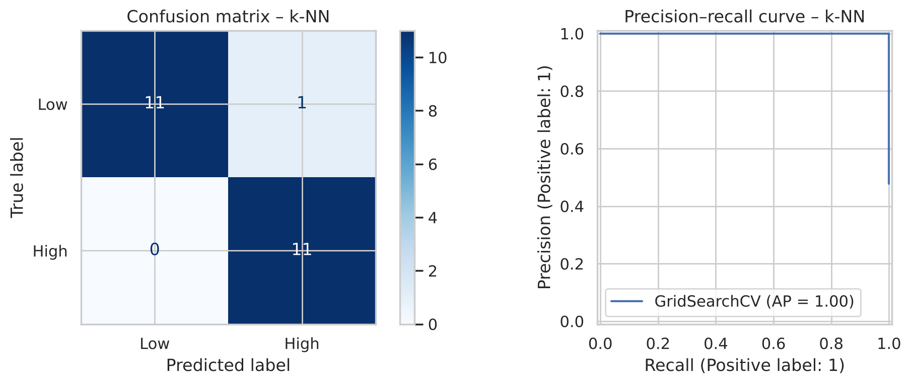
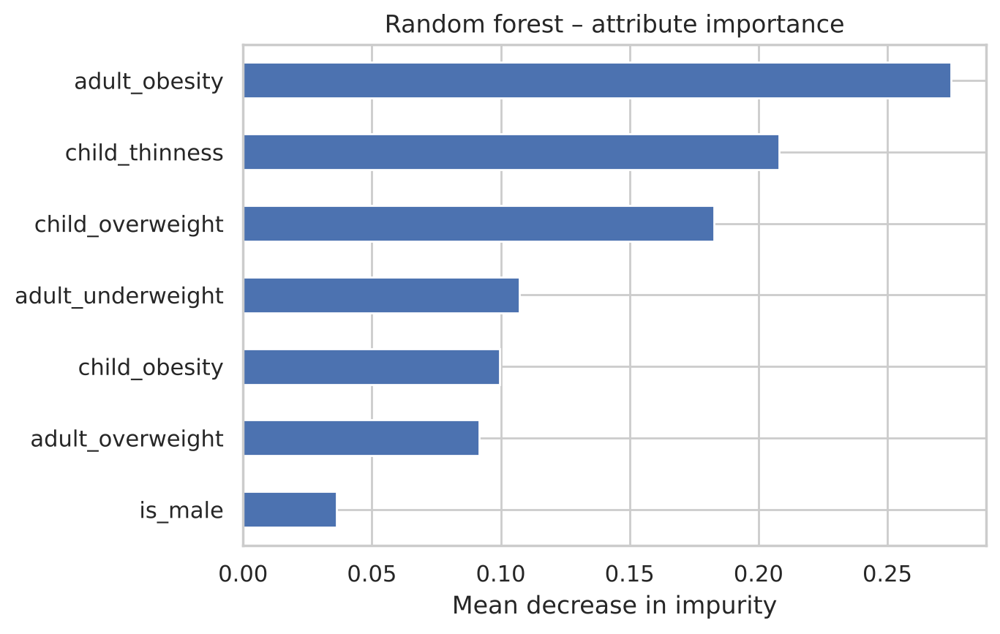
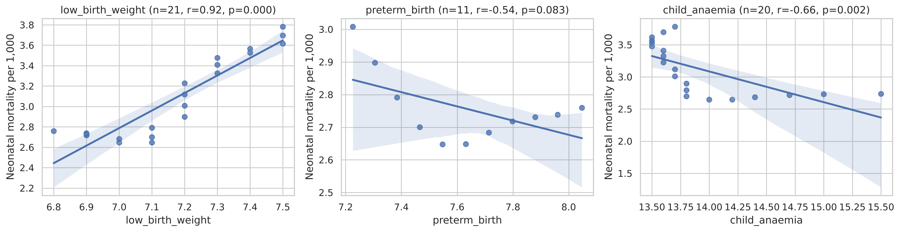

Pick a decade. Infant mortality falls while adult obesity rises, and the share of High infant mortality records drops to zero by the 2010s. That shared time trend is what every later analysis has to account for.
9.99infant deaths per 1,000 live births
5.77neonatal deaths per 1,000 live births
9.0%adults with obesity (age-standardised)
20 / 20male and female records classed High
Decade
Infant
Neonatal
Adult obesity %
Adult overweight %
Child obesity %
Child thinness %
High records
Decade means, both sexes. High = infant mortality above the median of 5.24 across the 90 male and female records.
The data
Two WHO files, one table
Both files come from the WHO Global Health Observatory through the Humanitarian Data Exchange. Each row is one indicator value for one year and one breakdown. The mortality file gives the outcome; the nutrition file gives the possible risk factors. Neither answers the question alone, so they were joined on year and sex.
Dataset
Records
Indicators
Years
Used here
Child mortality
4,589
16
1949–2024
Infant and neonatal mortality per 1,000 live births
Attribute types, size, sparsity, missing values, 678 and 565 exact duplicates, and a hidden age breakdown in child BMI.
Step 2 · Clean
Remove what can't be used
46 records with no value dropped, duplicates removed, national totals labelled instead of discarded.
Step 3 · Integrate
Join on year and sex
Sex labels matched across files; 405 conflicting child BMI values averaged; 135 records for 1980–2024.
Step 4 · Reduce
Keep 15 of 42 indicators
Four near-duplicate attributes dropped (r ≥ 0.986), including under-five mortality, which tracks infant mortality at r = 1.000.
Step 5 · Transform
Make it model-ready
Decades as a hierarchy, High / Low class at the median (5.24), sex one-hot encoded, z-scores fitted on training data only.
Step 6 · Mine
Three analyses
k-means on 45 years, three classifiers with 5-fold cross-validation, and Pearson correlation for 2000–2020.

How the steps fit together, from the two files to evaluation.
Warehouse design
A galaxy schema with two fact tables
Mortality and nutrition each get their own fact table, so each keeps its own structure. Both share four dimensions: Time, Location, Sex and Indicator, which is what lets the two datasets be compared by year and sex.
Age group applies only to mortality and the breakdown dimension only to nutrition, so each has a dimension table of its own. Each fact row stores an indicator value with its lower and upper bounds. Years roll up to decades, and countries to regions.
2
fact tables: child mortality, nutrition
4
shared dimensions: Time, Location, Sex, Indicator
2
own dimensions: Age group, Breakdown

Galaxy (fact constellation) schema.
Exploration
Almost everything correlates with everything
Most pairs of attributes have a correlation above 0.85 in size. Mortality falls as obesity and overweight rise, and rises with adult underweight. Child thinness is the exception, with weaker links to the rest.
Correlation only measures a linear link, and here most of it comes from all the series changing over the same decades. That is why the analyses below test whether nutrition adds anything beyond time.

Correlation matrix, 1980–2024, both sexes.
Findings
What the data shows
The years fall into blocks of consecutive years
0.637silhouette, k = 2
k-means splits the years into 1980–1991 and 1992–2024. With three clusters the breaks are 1987 and 1998. Every cluster is an unbroken run of years, so the "health periods" mostly follow the time trend: high mortality and low obesity early, the reverse later. The post-2014 plateau sits inside the last period rather than forming its own.
k = 3
silhouette 0.561; 1980–1987, 1988–1998, 1999–2024
20
random starts per run, lowest SSE kept

k-means clusters over time for k = 2 and k = 3.
Nutrition and sex predict High or Low infant mortality
95.7%test accuracy
k-NN with three neighbours and Manhattan distance was chosen by cross-validation (F1 0.956). On 23 held-out records it made one mistake and missed no High year. A model that always guesses the majority class scores 47.8%.
0.917 / 1.000
precision / recall for the High class
0.942
cross-validated F1 of a decision tree of depth 2
0.956
cross-validated F1 of a random forest, 100 trees

Confusion matrix and precision–recall curve for k-NN on the test set.
Model
Settings chosen
CV F1
Train acc.
Test acc.
Precision
Recall
Test F1
Majority baseline
–
0.393
0.507
0.478
0.478
1.000
0.647
k-NN (selected)
K = 3, Manhattan
0.956
0.985
0.957
0.917
1.000
0.957
Decision tree
Max depth 2
0.942
1.000
1.000
1.000
1.000
1.000
Random forest
100 trees, max depth 3
0.956
1.000
1.000
1.000
1.000
1.000
Cross-validation on 67 training records; each model scored once on 23 test records. k-NN was kept because it tied for the best CV F1 and came first in the list.
What the models relied on
2splits decide the tree
The random forest leaned most on adult obesity, child thinness and child overweight. The two-level decision tree shows why. Its first split is on child thinness, which separates the sexes, and its second is on adult obesity, which separates early years from late ones.
child_thinness ≤ 1.058
first split: stands in for sex
adult_obesity ≤ 17.0 / 23.3
second split: stands in for time
is_male
least used attribute in the forest

Random forest attribute importance (mean decrease in impurity).
Low birth weight moves with newborn deaths
r = 0.916p < 0.001, 21 years
Between 2000 and 2020, years with more low-birth-weight babies were years with higher neonatal mortality. Preterm birth and child anaemia show negative correlations, which come from opposite time trends rather than any protective effect.
0.951
low birth weight vs infant mortality
−0.544
preterm birth vs neonatal, p = 0.083, 11 years
−0.660
child anaemia vs neonatal, p = 0.002, 20 years

Birth-related factors against neonatal mortality, 2000–2020.
The check that matters
Nutrition mostly stands in for time
A decision tree given only the year and sex scored a cross-validated F1 of 0.942, almost the same as the nutrition model's 0.956. Adult obesity rose while mortality fell over the same decades, so the model can tell years apart by obesity without obesity doing anything to mortality. These are associations, not causes.
Limits and next steps
What this can't tell you yet
One country, 45 years
Small samples: one wrong prediction moves test accuracy by about four points. Adding other countries from the same WHO source would help.
Smoothed estimates
WHO figures are modelled and smooth, which makes neighbouring years look alike and strengthens trends.
Random split across time
Neighbouring years landed in both training and test sets. Training on earlier years and testing on later ones would be fairer.
Missing breakdowns and factors
Age, wealth and residence detail was set aside, and maternal factors such as smoking and deprivation were not in the data.
About
About NutriMort
NutriMort was built by Manju Swaroop V to test whether open WHO nutrition indicators can explain the slowdown in UK infant mortality. All figures and numbers on this page come from the project's notebook.